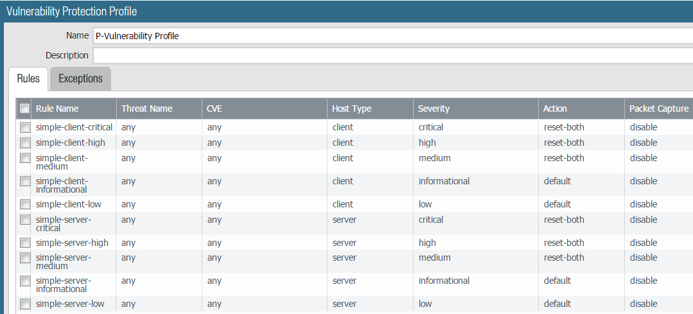
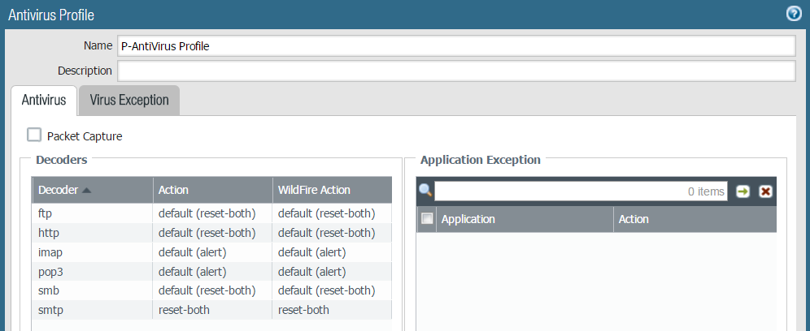
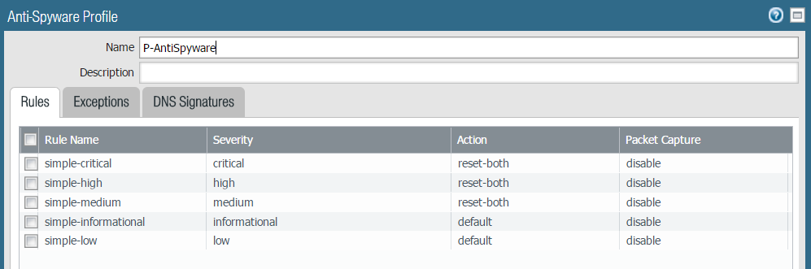
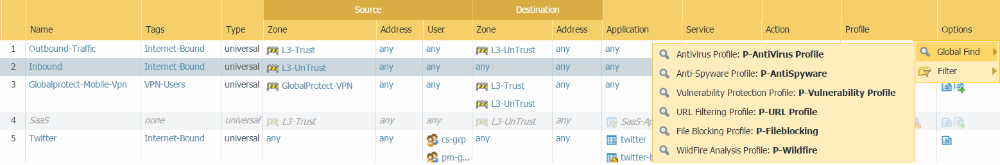

Are you using an IPS at all Internet access points?¶
We have to enable Vulnerability protection, Antivirus protection and Antispyware protection profiles such that we have the content inspection enabled and action is set to block the threat and not just alert them and log. We have to also make sure this three profiles are enabled across all the traffic flows in the Enterprise Perimeter for both the directions that is coming into the network from internet and going from inside to internet.
Vulnerability Profile Setting:
For Client and Server Host Type we should have the tcp connection to be reset if threat is identified for severity medium, high and critical as shown above. Review if there are any Exceptions. If necessary, we can set exceptions only for certain IP addresses and not for all the network users. ( IP Address Exemptions). Try to limit the exceptions and review them frequently to tighten the threat control. To make sure exceptions configured are not left as it is forever and if all is fine remove the exception and enable it again.
Antivirus Profile Configuration:
Antivirus profile should be configured as above to reset the connection for the specified decoders. Under the Wildfire Action field as shown above it should be configured similar to the Antivirus profile actions as they are optimal to reset the traffic flow connection if threat is identified and matched. For all the Wildfire signatures learnt through private wildfire content update the action defined here takes effect. Hence this configuration is a must to make sure the reset is configured correctly.
Anti-Spyware Profile Configuration:
We should have the traffic flow connection to be reset if threat is identified for severity medium, high and critical as shown above. Review if there are any Exceptions. If necessary, we can set exceptions only for certain IP addresses and not for all the network users. ( IP Address Exemptions). Try to limit the exceptions and review them frequently to tighten the threat control. To make sure exceptions configured are not left as it is forever and if all is fine remove the exception and enable it again.
Security Rules:
Notice the first two rules are Internet-Bound. One of them is Outbound traffic and the second rule in Inbound Traffic. We have to make sure the Security profiles as discussed above is enabled on these policies. Remember the profiles are designed to block the threat and not alert so the network is now set to protect from known threats.